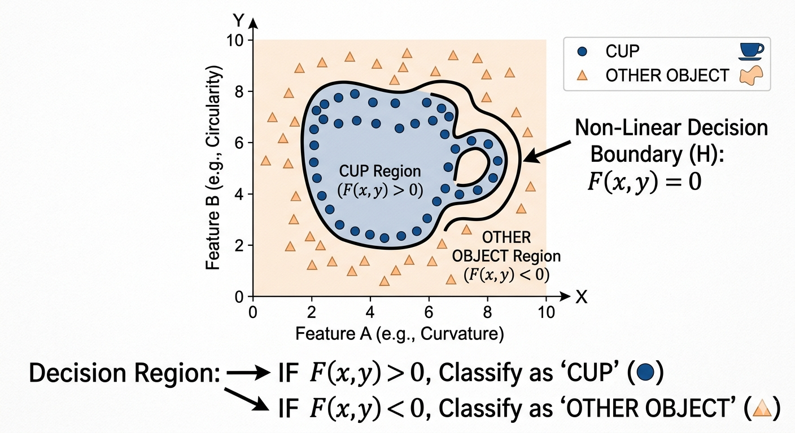

Five weeks. Two hours a week. No prerequisites. Train your own AI. Look inside how it works. Catch it lying. Audit its biases. Walk out with practical skills, real artifacts, and a clear-eyed understanding of where AI helps — and where it doesn’t.
Do these before our first session so we don’t lose 15 minutes to setup. All free. All quick.
AI is built from data, which trains models, which produce outputs, which we use responsibly, which shape careers. Each week advances one stage. By the end, you will have done all six.
Each lab follows the same four-phase practice: Watch → Try → Adjust → Reflect. Same form every week. Different content. Click any week to see what you’ll do.
Chat with an AI from 1966 and one from today. By the end, you’ll be able to spot the difference between a rule-based system and a learning-based one without being told which is which.
Did either response feel like it understood you, or just pattern-matched?
Where did each one break down, repeat itself, or feel hollow?
If you didn’t know which was from 1966, could you tell?
Train your own image classifier from scratch using your laptop’s webcam. By the end, you’ll have a working AI you built yourself — and you’ll have felt why bad data makes bad AI.
What kinds of photos did Round 1 fail on? What did it confidently get wrong?
What changed between Round 1 and Round 2 — was it the model, or the data?
Where in your real life have you seen AI fail in a similar way?
A model only knows what it was shown. Limited data = limited audience.
Models silently fail when conditions don’t match training.
AI can’t say “I don’t know” — it always picks something. That confident wrong answer is the dangerous one.
Training data reflects who built it. That’s why AI tends to work best for some groups and worst for others.
The bigger the decision, the more careful the data needs to be.
Consent in AI training is rare. That’s a fairness issue most people don’t think about.
Open up a real neural network and watch it process an image, layer by layer. Then see exactly how AI breaks language into numbers — including what it does to your own name.
A neural network is just lots of small “pattern detectors” stacked in layers. Each layer looks at a slightly bigger pattern than the one before it. CNN Explainer lets you see those layers light up while it tries to figure out what your image is.
An analogy: imagine spotting a friend across a crowded room. Your eyes don’t see “Sarah” instantly. First you notice a human shape. Then a hair color. Then familiar facial features. Then — oh, that’s Sarah. A neural network does the same thing in stages: pixels → edges → shapes → objects. CNN Explainer just makes those stages visible.
In CNN Explainer, what was the difference between an early layer and a deep layer?
Which of your tokenizer inputs had surprisingly many tokens? Why might that be?
If AI was trained mostly on English text, how might that affect users like you?

If this picture clicks for you — the idea that the network is just learning where to draw the line between “cup” and “not cup” in a space of features — you’ve got the core intuition behind every CNN (and most classifiers). The rest is just adding more dimensions and more layers.
Every AI response, no matter how complex it sounds, goes through the same five-step pipeline. The “intelligence” lives in steps 3 and 4. Everything else is repetition.
The model doesn’t see words — it sees tokens (chunks). The word “capital” might be one token; “unbelievable” might split into un + believ + able. Roughly 1 token ≈ 0.75 words in English. This is exactly what you’ll see in Tiktokenizer in Part B — tokens are the unit of pricing, the unit of context limits, and the unit the model actually reasons over.
Each token gets converted into a long list of numbers — a vector, often with 1,000 or more dimensions. This is where meaning lives. Words with similar meanings get similar vectors. This is the foundation of semantic search:
Why this matters: when someone searches “kitten,” the system converts that query into a vector and finds the nearest neighbors in this space — cat, dog, lion — even though “kitten” never appears in the source text. That’s why “car broke down” can match “vehicle malfunction.” Keyword search can’t do that.
The model looks at all tokens at once and decides which ones matter for understanding each word. In “The bank by the river,” attention figures out that river is what makes bank mean shoreline, not financial:
This attention step happens across dozens of stacked layers, each refining understanding further. By the top layer, the model has a rich representation of what’s being asked.
The model outputs a probability score for every possible token in its vocabulary (~100,000+ options). It picks the most likely one, or samples from the top few for variety:
Here’s the part most people miss: the model only predicts one token at a time. It picks “mat,” appends it to the input, and runs the entire pipeline again to predict the next token. That’s why responses stream word by word — each one is a fresh trip through the pipeline.
Run the same task through three different prompt styles and see how the output changes. Then deliberately make the AI hallucinate a fact, and prove the lie. By the end, you’ll know how to get more out of AI — and how to never trust it blindly.
Pick a task. Send it to ChatGPT three different ways. Compare the outputs.
Pick one of these prompts. Send it to ChatGPT. The AI will likely invent something. Your job is to verify it with a real source (Google, Wikipedia, or a real database).
Which of the three prompt styles gave you the best output? Why?
How confident did the AI sound when it was lying? Could you have caught it without checking?
Where in your life would an AI hallucination cause real problems?
Run identical prompts through two of the world’s most popular AI systems and document what you find. Then build a personalized 6-month AI learning roadmap based on your career goals.
Open ChatGPT in one tab and Gemini in another. Send each one the prompts below. Document the differences.
Use the prompt below in either ChatGPT or Gemini. Customize it with your real major, year, and goals. Save the response.
For each bias prompt, did the two AIs give similar or different answers? What did they assume by default?
Were there any prompts where one AI was clearly more biased than the other?
Looking at your roadmap: which suggestions feel realistic for you, and which don’t fit your reality? What does that gap tell you?
All free. All work in your browser. Bookmark these — you’ll come back to them after the course ends.
The original 1966 chatbot — pure pattern-matching, no learning. Browser-only.
Open ELIZA → Weeks 1, 4, 5Today’s most-used LLM. Sign up before Week 1.
Open ChatGPT → Week 2Google’s no-code ML trainer. Train a classifier from your webcam in minutes.
Open Teachable Machine → Week 3Visualizes a real convolutional neural network layer-by-layer. Made by Georgia Tech.
Open CNN Explainer → Week 3See how AI breaks any text into tokens — the units LLMs actually read.
Open Tiktokenizer → Week 4 (backup)Anthropic’s assistant. Useful comparison or backup if ChatGPT is rate-limited.
Open Claude → Week 5Google’s LLM. Used in Week 5’s side-by-side bias audit.
Open Gemini →Real questions students raised in our first session.
There isn’t a single “best” model — the right choice depends on what you’re trying to do. Different models are trained and tuned to excel in different areas:
But picking the model is only one piece. The quality of the output depends just as much on how you prompt and what context you provide:
A simple way to think about it:
Weakness in any one of those three will hold the other two back. A top-tier model with a vague prompt and no context will lose to a smaller model used skillfully.
This section is for students who want to peek under the hood at how machine learning actually works. Totally optional — the core course doesn’t depend on any of this. Expand a topic if you’re curious; skip if you’re not.
What it is: the model is given data with no answers attached and has to discover structure on its own — usually by clustering similar items together or compressing the data to its essential dimensions.
Input → process → output, simply:
Recommended notebooks & reading:
What it is: an “agent” takes actions in an environment, gets a reward (or penalty), and gradually learns which actions lead to the best long-term outcome. This is how AlphaGo learned Go and how robots learn to walk.
Input → process → output, simply:
Recommended notebooks & reading:
Modern chatbots like Claude, ChatGPT, and Gemini are built on a stack of all three learning styles:
So the small examples above (Iris clustering, FrozenLake) really are the same ideas that power the tools we use in class — just at a vastly smaller scale and easier to inspect.
We’d love to hear from you. Whether it’s a question about the course, a concern, or a suggestion to make things better — don’t hesitate to reach out.
Christopher Rajbalraj — ICCI Instructor
christopher.rajbalraj@icci.edu.ky
Shannon Williams — Guest Lecturer
shannon@obsidiansoftware.ky